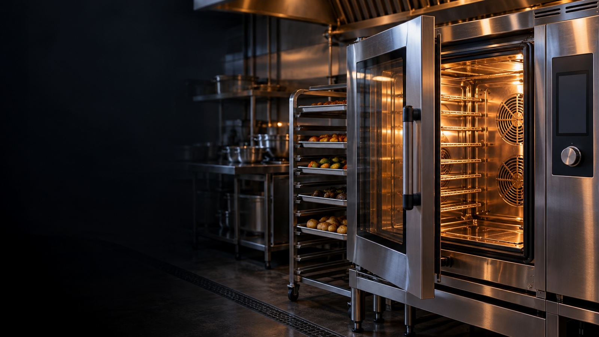

Troubleshooting tips for Memphis kitchens before calling for service.
Is your oven down during the dinner rush? Check these common issues first. If none of them get you back up, we handle commercial oven repair in Memphis same-day. Got a conveyor pizza oven specifically? See our dedicated guides for Middleby Marshall and Lincoln Impinger ovens.
The most common issue. Drafts or dirty sensors can snuff out the pilot.
The Fix: Locate the pilot assembly. Follow the manufacturer's instructions to relight it. Usually, you hold the knob in for 60 seconds after lighting. If it won't stay lit, your thermocouple is likely bad.
Even gas ovens need electricity for the fans and controls.
The Fix: Check your breaker panel. Sometimes a surge can trip it. Also, check if the unit is plugged in securely. (We've seen it happen!)
If heat is escaping, the oven can't maintain temperature, leading to undercooked food.
The Fix: Visually inspect the door gasket for tears. Ensure the door hinges aren't bent, preventing a tight seal.
If you smell gas, turn off the gas supply immediately and evacuate. Do not attempt to fix gas leaks yourself.
For other issues like faulty igniters, bad thermostats, or broken fans, you need a certified technician.
The most common issue is the pilot light. Check if it's lit. If it lights but goes out when you release the knob, the thermocouple might be faulty.
This usually indicates a bad heating element (electric) or a failed igniter module (gas). If the fan works, power is getting to the unit, but the heat source isn't engaging.
Uneven baking is often caused by a failed convection fan motor or a thermostat that has lost calibration. It can also happen if the door hinges are bent and heat is escaping.
We repair Vulcan, Blodgett, Southbend, and all major brands in Memphis. Same-day service available. See everything our commercial oven repair in Memphis covers, or call now.
Call Now: (901) 257-9417Licensed Appliance Repair Specialists